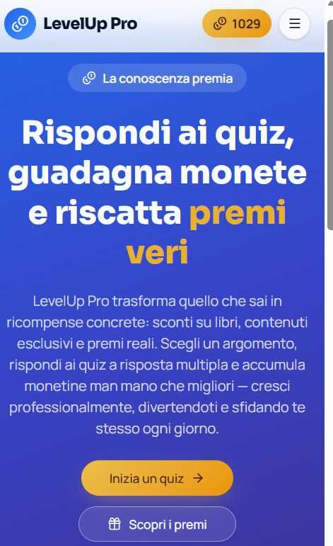
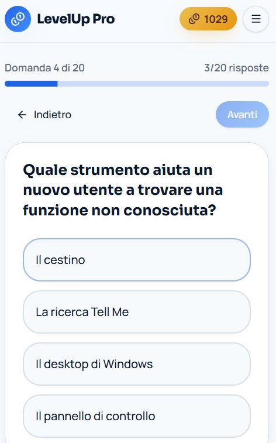
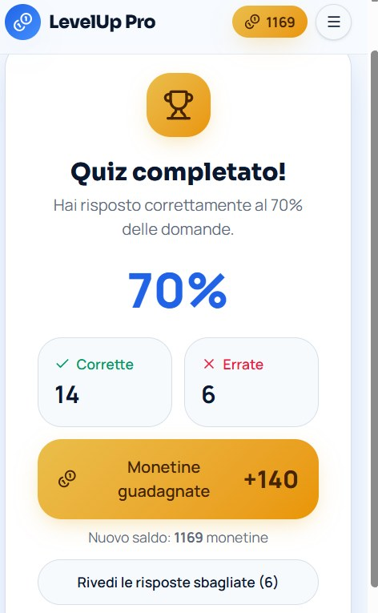
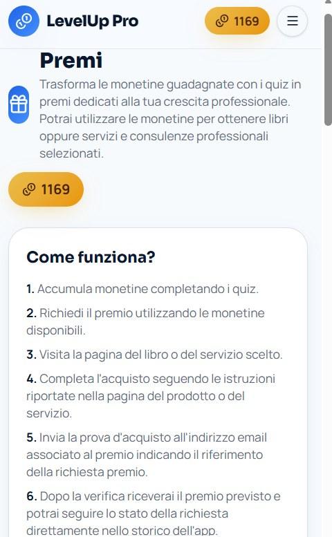

Quiz a livelli sugli argomenti del lavoro di ogni giorno: consulenza, programmi e strumenti, organizzazione e gestione. L'ho ideata, progettata e pubblicata su Google Play, con il supporto di strumenti AI per lo sviluppo.
La formazione continua funziona se è breve, chiara e se dà un motivo per tornare. Da qui è nata un'app pensata per chi lavora in ufficio, davanti a un computer, in ruoli aziendali dove le competenze fanno la differenza: si sceglie un argomento, si risponde alle domande, si ottengono risposte immediate e piccoli traguardi.




Per chi vuole offrire un premio. I premi dell'app sono libri e sconti su servizi. Se sei un autore, un consulente o un professionista e vuoi farti conoscere da un pubblico di professionisti, c'è spazio per te.
Per chi ha bisogno di un'app di quiz su misura. Per aziende che devono verificare le competenze dei dipendenti (sicurezza, procedure, onboarding), scuole ed enti di formazione posso progettare un'app personalizzata: argomenti e domande tuoi, livelli di difficoltà, classifiche.
Scrivimi a monica.dominijanni@gmail.com: ne parliamo senza impegno.
È il progetto che tiene insieme le due parti del mio lavoro: da un lato i processi e gli strumenti aziendali che conosco da anni, dall'altro la capacità di trasformare un'idea in qualcosa che si usa davvero. Anche qui il metodo è lo stesso: prima si chiarisce a chi serve e in quale momento della giornata, poi si sceglie lo strumento.